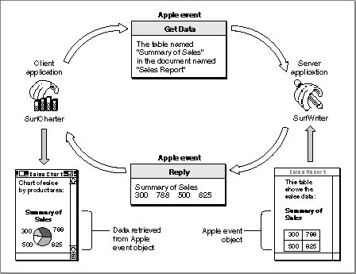

Apple Events and Apple Event Objects
The Open Documents event shown in Figure 3-1, like the other three required events, specifies an action and the applications or documents to which that action applies. The Apple Event Registry: Standard Suites provides a vocabulary of actions for use by all applications. In addition to a vocabulary of actions, effective communication between applications requires a method of referring to windows, data (such as words or graphic elements), files, folders, volumes, zones, and other discrete items on which actions can be performed. The Apple Event Manager includes routines that allow any application to construct or interpret "noun phrases" that describe the objects on which Apple events act.Most of the Apple event definitions in the Apple Event Registry: Standard Suites include definitions of Apple event object classes, which are simply names for objects that can be acted upon by each kind of Apple event. An Apple event object is any distinct item supported by an application that can be described within an Apple event. Apple event objects can be anything that an application can locate on the basis of such a description, including items that a user can differentiate and manipulate while using an application, such as words, paragraphs, shapes, windows, or style formats.
The definition for each Apple event object class in the Apple Event Registry: Standard Suites determines only how that kind of Apple event object should be described within an Apple event, not how it should be represented internally by an individual application. You do not have to write your application in an object-oriented programming language to support Apple event objects. Instead, you need to organize your application so that it can interpret a request for specific Apple event objects, locate the objects, and perform the requested action on them.
Figure 3-2 shows a common Apple event, the Get Data event from the Core suite. In this example, the SurfCharter application is the client application; it requests data contained in a specific table in a SurfWriter document. To obtain the data it wants, the SurfCharter application must include a description of the data in the Get Data event it sends to SurfWriter. This description identifies the requested data as an Apple event object called a table. The table is named "Summary of Sales" and is located in a document named "Sales Report."
The SurfWriter application's Get Data handler extracts information about the request, locates the specified table, and returns a result. The Apple Event Manager provides a reply Apple event to which the SurfWriter application adds the requested information in the form requested by the Get Data event. The Apple Event Manager sends the reply event back to the SurfCharter application, which can use the requested data in whatever way is appropriate--in this case, displaying it as a pie chart.
